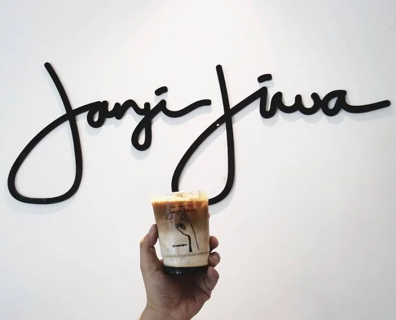

Kopi Janji Jiwa
Melayani Anda kegembiraan setiap hari! Semua orang diterima, kami ada untuk rakyat Nikmati cita rasa 100%. Biji Kopi Indonesia kami Brand Janji Jiwa


Melayani Anda kegembiraan setiap hari! Semua orang diterima, kami ada untuk rakyat Nikmati cita rasa 100%. Biji Kopi Indonesia kami Brand Janji Jiwa
Janji Jiwa merupakan salah satu kedai kopi di Indonesia yang mulai buka pada tahun 2018. Janji Jiwa memiliki konsep fresh-to-cup, penyajian kopi dipilih dari hasil kopi lokal Indonesia dan disajikan secara trendi. (jiwagroup.com,2021). Janji Jiwa hingga saat ini sudah memiliki beberapa pencapaian, pada tahun 2019 mendapatkan rekor MURI dalam Pertumbuhan Kedai Kopi Tercepat dalam Satu Tahun. Pencapaian ini didapatkan karena dalam periode satu tahun hadirnya Janji Jiwa di Indonesia, sudah membuka 700 outlet lebih dari 50 kota besar di Indonesia.

Dikombinasi dengan susu ini memiliki rasa sedikit pahit karena roasted leaf tea yang ada dalam minuman ini masih terasa. Sementara susu dalam es hojicha memberikan sensasi sedikit manis
Menu ini merupakan perpaduan antara kopi susu dengan buah alpukat. Kesegaran minuman ini dihasilkan oleh kombinasi espresso yang ditambah dengan krim cokelat

Soy Matcha Latte ini memiliki sensasi yang segar dengan tambahan es krim di atasnya. Rasa kedelai dalam minuman ini tidak terlalu dominan, kemudian teksturnya lebih thick and creamy
Anda dapat menghubungi kami melalui salah satu metode berikut: